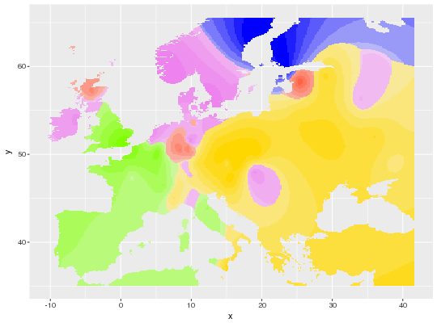

Displays geographic maps for ancestry coefficients.
ggtess3Q(Q, coord, resolution = c(300, 300), window = NULL, background = TRUE, map.polygon = NULL, raster.filename = NULL, interpolation.model = FieldsKrigModel(10), col.palette = CreatePalette())
tess3Q. The ancestry coefficient matrix.window = c(xmin, xmax, ymin, ymax)
contains the window mina nd max coordinates.sp::SpatialPolygonsDataFrame object used to crop the interpolating surfaces.
If NULL, the function getMap is used.map.polygon.FieldsTpsModel,
FieldsKrigModel.CreatePalette.None
library(tess3r) # Retrieve a dataset data(data.at) # Run of TESS3 obj <- tess3(data.at$X, coord = data.at$coord, K = 5, ploidy = 1, method = "projected.ls", openMP.core.num = 4)#> Computing spectral decomposition of graph laplacian matrix: done #> Main loop with 4 threads: #> : done #># Get the ancestry matrix Q.matrix <- qmatrix(obj, K = 5) # Plot the spatial interpolation of the ancestry matrix ggtess3Q(Q.matrix, data.at$coord)